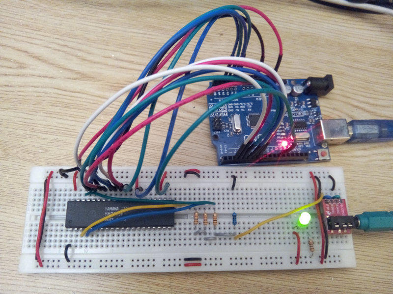
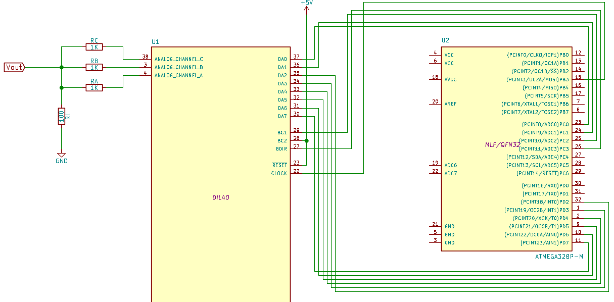

A few months ago, I had the opportunity to get a Yamaha YM2149F chip. This chip is basically a clone of General Instrument's AY-3-8910, "a 3 voices programmable sound generator" widely used in the 80's in many arcade games and home computers (including the Atari ST and Amstrad CPC).
The YM2149F chip (and its clones) can be found easily online, on auction websites. The challenge is then to be able to drive the chip and play some music with it. There are several blog posts out there describing circuits to have the chip driven by a PC.
The blog post YM2149 sound generator, Arduino and fast pin switching, from Mr Megahertz has been very inspirational for this work. It contains a lot useful information. On the other hand, by programming the Arduino without using the provided SDK (as described on the Arduino Hello World without IDE blog post), we don't have any issue to switch BDIR and BC1 signals simultaneously.
The circuit
After many experiments, I came out with a simple circuit composed of:
- A Yamaha YM2149F
- An Arduino Uno board (or clone)
- 4 resistors (3×1K + 1×100 Ohms)
- A mini jack female connector
- A breadboard
- A few wires
Here's a picture of the circuit:

The corresponding schematic follows:

Note that we don't need to use a dedicated oscillator for the YM2149F. We can generate the required 2MHz clock with the Atmega328P on the Arduino board.
The output stage
I made a lot of experiments on the output stage. The 4 resistors between the 3 YM2149F outputs and the line output is a good compromise. This forms a passive mixer, which significantly improves the quality of the sound compared to the 1 resistor stage that can be found in most YM2149 circuits available online. The lower the value of RL, the less distortion we have on the output, but the lower the signal strength. I found that 100 ohms is a good compromise. In that case, the load perceived from an output of the YM2149F fluctuates between 1.1 and 1.6 kOhms, depending on the values of the other channels (if my computations as correct). And according to the YM2149 datasheet page 9, the expected load for a YM2149 output is 1kOhms. The distortion comes from the fact that the equivalent resistance seen from a YM2149F output channel is dependent on the other channels. The sound may be further improved by using an active mixer, including an operational amplifier (To be tested some day).
Testing the circuit
The code to drive the YM2149F from the Arduino is available on
GitHub. One can compile and upload the code to the Arduino by
following the instructions of the Arduino Hello World without IDE
post. The code will have the YM2149F play continuously the C major
gamut. This code can be freely reused, especially the ym2149
library, which allows to drive the YM2149F chip.
Note that in order to have the ym2149-test binary work on a circuit, one has to follow the connections described on the schematic above.
What next
I will soon publish the Arduino code together with some PC side code to have YM files streamed to the YM2149F chip.
Comments !